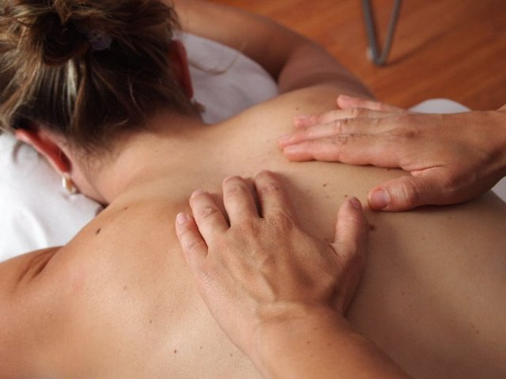

<div class="container">
  <div class="slidershow middle">

    <div class="slides">

        <input type="radio" name="r" id="r1" checked>
        <input type="radio" name="r" id="r2">
        <input type="radio" name="r" id="r3">
        <input type="radio" name="r" id="r4">
        <input type="radio" name="r" id="r5">
        
        <div class="slide s1">
          
        </div>

        <div class="slide">
          
        </div>

        <div class="slide">
          
        </div>

        <div class="slide">
          
        </div>

        <div class="slide">
          
        </div>

      </div> <!--lides-->

      <div class="navagation">
        <label for="r1" class="bar"></label>
        <label for="r2" class="bar"></label>
        <label for="r3" class="bar"></label>
        <label for="r4" class="bar"></label>
        <label for="r5" class="bar"></label>
      
      </div>
  </div> <!--slidershow middle-->
</div>
  <!-- <ngb-carousel *ngIf="images">

    <ng-template ngbSlide>

      <div class="picsum-img-wrapper">
        
      </div>

      <div class="carousel-caption">
        <h3>Primeira Imagem do Slider Costas</h3>
        <p>Massagem para correção postural. Existem 4 tipos de problema de postura: A hiperlordose, a escoliose, a hipercifose e as costas retificadas.</p>
      </div>

    </ng-template>


    <ng-template ngbSlide>
      <div class="picsum-img-wrapper">
        
      </div>
      <div class="carousel-caption">
        <h3>Segunda Imagem do Slider maos</h3>
        <p>Nossas mãos também devem começar a receber uma atenção especial, principalmente por haver pontos reflexos que podem promover o alívio de dores não só para as mãos, mas para o corpo todo..</p>
      </div>
    </ng-template>


    <ng-template ngbSlide>
      <div class="picsum-img-wrapper">
        
      </div>
      <div class="carousel-caption">
        <h3>Terceira Imagem do Slider Massagem</h3>
        <p>Há quase 100 tipos diferentes de massagem, segundo a Abramc (Associação Brasileira de Massoterapia Clínica). Seria impossível reunir em um só texto toda essa variedade..</p>
      </div>
    </ng-template>


  </ngb-carousel> -->
